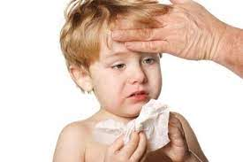

El sistema inmunológico constituye un pilar fundamental para el mantenimiento de la homeostasis corporal al defendernos de las agresiones externas y evitar el desarrollo de enfermedades autoinmunes. En las últimas décadas la inmunología clínica ha tenido un enorme desarrollo, gracias al avance de nuevas técnicas de laboratorio que permiten un estudio detallado del sistema inmune; en consecuencia se incrementó el diagnóstico del número de enfermedades en las que se ha reconocido el mal funcionamiento inmunitario, favoreciendo así la mejor intervención terapéutica.
La inmunología clínica tiene como objetivo el estudio detallado de los procesos inmunológicos básicos y de las patologías que pueden originarse por disfunción del mismo: inmunodeficiencias primarias y secundarias, fallos en la defensa contra el desarrollo de neoplasias, hipersensibilidad con desarrollo de alergia, enfermedades autoinmunes y rechazo de órganos trasplantados, entre otras.El inmunólogo pediatra, a diferencia de otros especialistas, juega un papel dual en la práctica clínica de la medicina. Será el médico tratante de una serie de pacientes con inmunodeficiencias congénitas y de ciertos pacientes con patología autoinmune. Pero además, será un médico consultado por otras especialidades en problemas de autoinmunidad e hipersensibilidad, así como para los equipos de trasplante de órganos sólidos y de médula ósea. La medicina moderna se basa en la integración de equipos interdisciplinarios que brinden una atención integral al portado de diferentes patologías. El inmunólogo pediatra debería ser un integrante fundamental de muchos de estos equipos y el enlace entre la clínica y el laboratorio.
El especialista en inmunología pediatra es responsable del manejo de pacientes con inmunodeficiencias congénitas, durante la etapa diagnóstica, terapéutica, y a lo largo del seguimiento posterior, tanto durante la infancia y a veces durante la vida adulta. Además, los inmunólogos pediatras de diferentes regiones de nuestro país se encargan, hoy en día, de dar apoyo a otras especialidades en el manejo de enfermedades autoinmunes, y participan en los programas de trasplante de médula ósea y órganos sólidos.
Quizás te preguntes qué es un hematólogo pediatra y qué tipo de enfermedades trata. Para empezar, la hematología es la especialidad que se encarga de resolver posibles complicaciones relacionadas con la sangre. Uno de los casos más frecuentes a tratar es la anemia infantil, pero también se ocupa de otros problemas relacionados, por ejemplo, con la coagulación de la sangre y la cicatrización de las heridas, tan comunes entre los pequeños, por sus habituales caídas.Específicamente la hematología pediátrica se preocupa del diagnóstico y tratamiento de las enfermedades de los glóbulos rojos, los glóbulos blancos, las plaquetas y los trastornos de la coagulación. Las enfermedades específicas más frecuentes en pediatría son las anemias, los purpuras con o sin baja de plaquetas, las neutropenias y las coagulopatías congénitas como la Hemofilia, Enfermedad de von Willebrand y alteraciones plaquetarias.En tanto, cuando hablamos de hemato-oncología pediátrica, nos referimos a dicha área que comprende y trata el cáncer en la sangre. Nuestro servicio de Hematología cuenta con un completo laboratorio clínico para hacer el diagnóstico de enfermedades de la sangre, incluyendo aquellas de alta complejidad y baja frecuencia. Contamos con el centro privado más grande del país de Hemofilia y otras coagulopatías y con tratamientos de última generación, incluyendo trasplante de médula ósea para las enfermedades más complejas.Si su niño o adolescente padece de cáncer o de una enfermedad de la sangre, un hematólogo/oncólogo pediátrico tiene la experiencia y calificaciones para evaluarlo y tratarlo.
La naturaleza singular del cuidado de niños y adolescentes con enfermedades sanguíneas y cáncer, se aprende a través de un adiestramiento avanzado, así como de la experiencia práctica. Los hematólogos/oncólogos pediátricos tratan a niños desde el nacimiento hasta que son adolescentes y adultos jóvenes.